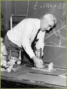
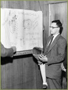
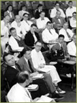
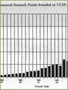
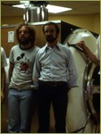

---
---
<!doctype html>
<html lang="en" xmlns="http://www.w3.org/1999/xhtml">
<head>
<meta http-equiv="Content-Type" content="text/html; charset=UTF-8" />
<meta name="viewport" content="width=device-width, initial-scale=1" />

<title>Photos - Healthcare Research - A History of UCSF </title>
<link href='http://fonts.googleapis.com/css?family=Gilda+Display' rel='stylesheet' type='text/css'>
<link href="ucsf_history.css" rel="stylesheet" type="text/css" media="all" />
{% include google_analytics.html %}
</head>

<body>
<div id="mainbody">
{% include ucsf_banner.html %}
<div class="banner"><h1><a href="/">A History of UCSF</a></h1></div>
<div id="insidebody">
<div id="photocopy">
  <div id="photocopy_text">
    <div id="subhead">HEALTHCARE, RESEARCH &amp; TEACHING</div>
<a href="healthcare.html" class="bodylink">Healthcare</a><br />
Research<br/>
    <a href="healthcare_teaching.html" class="bodylink">Teaching</a><br/>
  <br />
<div id="subhead2">Research</div>
<div id="photo_thumb_holder"><div id="photo_thumb"><a href="1940_photo14_2.html"></a><div id="photo_caption">Biomechanics Laboratory</div>
</div>
<div id="photo_thumb"><a href="1940_photo14.html"></a><div id="photo_caption">Biomechanics Laboratory</div>
</div>
<div id="photo_thumb"><a href="theme_photo15.html"></a><div id="photo_caption">Laboratory of Experimental Oncology</div>
</div>
</div>
<div id="photo_thumb_holder"><div id="photo_thumb"><a href="theme_photo16.html"></a><div id="photo_caption">Laboratory of Experimental Oncology</div>
</div>
<div id="photo_thumb"><a href="1940_photo9.html"></a><div id="photo_caption">Laboratory of Experimental Oncology - biopsy</div>
</div>
<div id="photo_thumb"><a href="1940_photo7.html"></a><div id="photo_caption">Laboratory of Experimental Oncology - Consultative Tumor Board, 1952</div>
</div></div>
<div id="photo_thumb_holder"><div id="photo_thumb"><a href="1959_photo4.html"></a><div id="photo_caption">Research funding, 1957-89</div>
</div>
<div id="photo_thumb"><a href="1959_photo24.html"></a><div id="photo_caption">AIDS research, Conant &amp; Volberding</div>
</div>
<div id="photo_thumb"><a href="1959_photo23.html"></a><div id="photo_caption">MRI, 1981</div>
</div>
</div>
<div id="photo_thumb_holder"><div id="photo_thumb"><a href="1959_photo17.html"></a><div id="photo_caption">Medical Anthropology, 1984</div>
</div>
</div>
</div>
</div>
<div id="sidebar">
<div id="sidenav_inside">{% include search_include.html %}<br />
    <div id="sidenavtype">
  <a href="story.html" class="sidenavtype"><strong>THE STORY</strong></a><br/>
  <br/>
  <a href="special_topics.html" class="sidenavtype"><strong>SPECIAL TOPICS</strong></a><br/><br/>
  <a href="people.html" class="sidenavtype"><strong>PEOPLE</strong></a><br/>
  <br/>
  <div id="sidenav_subnav_header"><strong><a href="photos.html" class="sidenav_subnav_type_visited">PHOTOS</a></strong></div>
    <div id="sidenav_subnav">
      <div id="sidenav_subnav_links">
      <strong><a href="portraits.html" class="sidenav_subnav_type">Portraits</a></strong><br />
        <br />
        <strong><a href="architecture.html" class="sidenav_subnav_type">Architecture</a></strong><br />
        <br />
        <strong><a href="healthcare.html" class="sidenav_subnav_type_visited">Healthcare, Research & Teaching</a></strong><br />
        <br />
        <strong><a href="cal_history.html" class="sidenav_subnav_type">California History</a></strong></div>
    </div>  <br/>  <a href="buildings.html" class="sidenavtype"><strong>BUILDINGS</strong></a><br/>
  <br/>
  <a href="index.html" class="sidenavtype"><strong>HOME</strong></a></div>
</div>
</div>
</div>
<br class="clearit" />
{% include footer.html %}
</div>
{% include bottom_js.html %}
</body>
</html>
